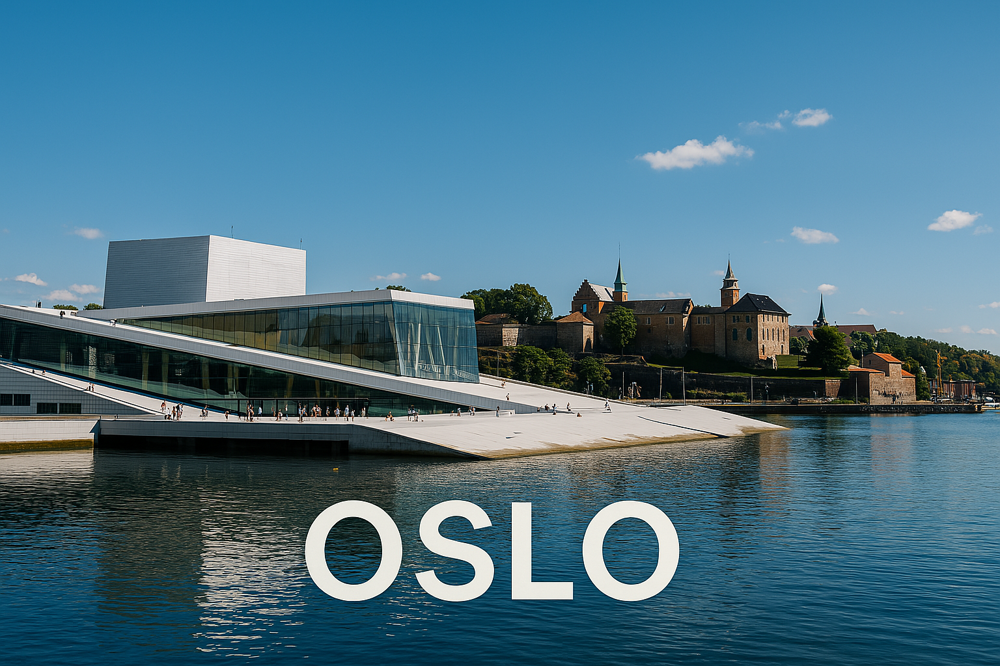

Oslo est la capitale de la Norvège, célèbre pour son cadre naturel entre fjords et forêts, et pour ses bâtiments modernes comme l'opéra d'Oslo.
À Oslo, tu peux visiter un musée consacré aux bateaux vikings, vieux de plus de 1 000 ans ! ⚓
Quel célèbre bâtiment moderne se trouve à Oslo ?